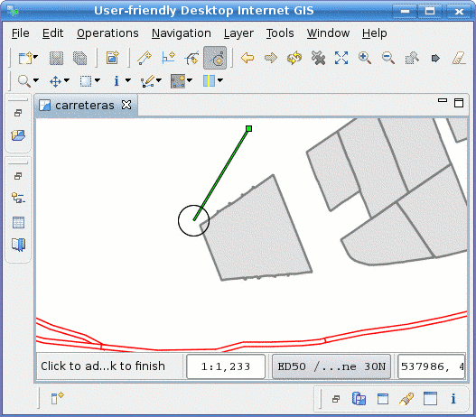
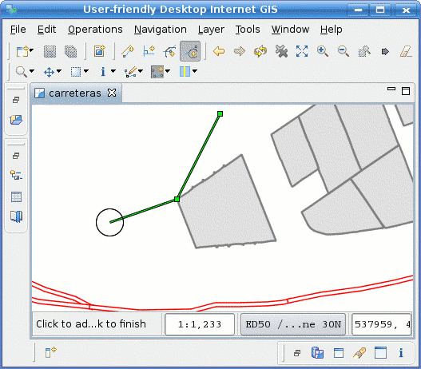

Snap to Vertex Mode (under development)
 Snaps the vertex to add to the closest one in another Feature
Snaps the vertex to add to the closest one in another Feature
Snap to Vertex is one of the most known editing modes. By selecting the
Snap to Vertex button on the Modes Toolbar, you're instructing uDig to search for the closest vertex inside the Snap Area each time you click over the map, and to add a vertex at that location.
Whether you can select snap to vertex from a Feature in the current Layer, in all Layers, or in the Grid, depends on the Snap Behaviour set as preference.
Figure 1 shows an example of using the Snap Area to snap to a vertex in a Feature from another Layer.

Figure 1 Using Snap Area to seach for the snap to vertex
Once you click over the map and a vertex that lies inside the Snap Area is found, a new vertex will be added on that location, as shown in Figure 2.

Figure 2 vertex added snapped to the closest vertex inside Snap Area
| Tip When using the Snap Area behaviour, remember you could adjust the size of the snap area with the mouse wheel while pressing the ALT key. |
{kind=link}
{kind=link}